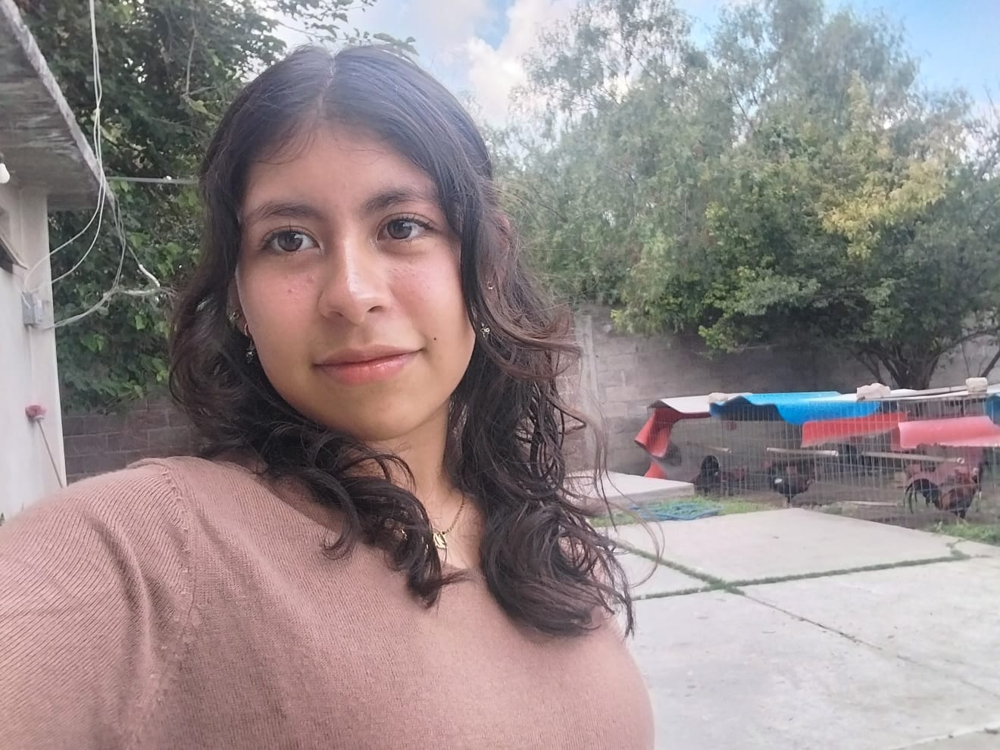
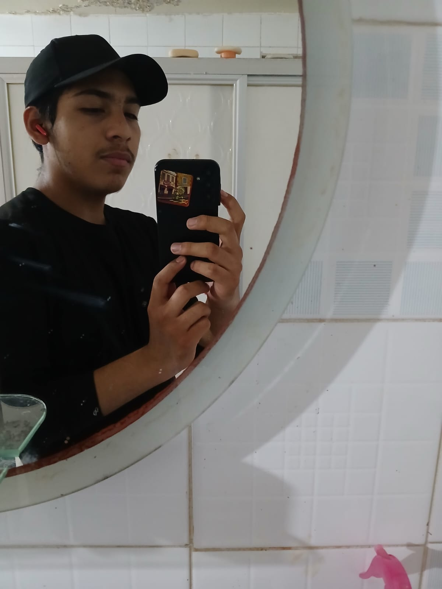

Erick Yael Cruz Rodriguez:
Hola muchos gusto, me presento soy Erick Yael Cruz Rodriguez tengo la edad de 15 años y mi cumpleaños es el 15/09/09. Voy a hablar un poco sobre mis gustos, miedos y metas a largo o corto plazo para mí futuro o los logros que he conseguido en estos 15 años de vida que llevo. Sueños: Principalmente mis sueños son cosas que me apasionan o que simplemente me gustan, en este caso sería el seguir a algo más grande con un deporte que llame mi atención como el básquetbol o el voleibol son deportes que me hacen sentir vivo y me gustaría llevarlos por el resto de mi vida, otra meta a largo plazo seria el graduarme y lograr cumplir con mi deber como hijo y hermano, darles una comodidad mejor y el estar y compartir buenos momentos junto con mi hermano y mi madre la otra de mis metas a largo plazo seria el tener casa propia con una familia, ya estar realizado y mantener una buena economía y ser un padre presente hacia mis hijos. Metas a corto plazo: Mejorar en el aspecto en el tenerme más confianza el lograr persuadir que igual puedo hacer lo que me propongo y el no limitarme yo mismo hacia cosas que puedo esforzarme y explotar el potencial y la otra sería el cambiar mi mentalidad y el ser más expresivo con lo que quiero decir el no huir de los problemas sino enfrentarlos de frente así sea la peor cosas del mundo lo que halla echo. Fobias/miedos: Podría ser el morir o el simple echo de estar muy a profundidad del mar, algo que me da mucho miedo es el estar solo me asusta la idea de no tener a nadie de las personas que me importan y quiero y por último sería el miedo a yo mismo cambiar drásticamente y dejar de ser yo mismo. Con esto terminaría muchas gracias por su atención.

Dafne Lineth Valdivia Rodriguez:
Soy Dafne Lineth Valdivia Rodriguez, tengo 15 años y naci el 19 de Diciembre del 2009 Soy una persona de estatura Baja y conflexion delgada, Ojos cafes y Cabello ondulado no soy una persona que salga mucho ya que casi no me dejan salir pero disfruto salir a caminar y practicar deporte entre eso Voleivol y karate, soy la menor de 4 hermanos y mis metas a corto plazo son seguir la escuela y subir de calificaciones al igual que mejorar en mis deportes y mis metas a Largo plazo son escribir un libro O una novela , trabajar de mi Carrera y conseguir mi casa propia
Ernesto Valencia Garcia:
Empezando con que mi nombre completo es Ernesto Valencia Garcia y naci el 05 de Julio del 2009, siguiendo con algunos gustos que tengo los cuales son que me encanta estar escuchando musica con mis audifonos, tengo 2 gatas y dos perros (una perrita y un perrote) e igual disfruto mucho salir a donde sea pero con amigos aunque igual estar solo no es algo que me incomode o disguste, SUEÑOS: De sueños me gustaria terminar una carrera como ingeniero tecnico en este caso ingeniero automotriz que seria una de las principales razones por las cuales entre a la Voca 3, luego sería tener una buena estabilidad con un buen empleo. LOGROS: El principal logro que he tenido es el estar aqui contando esto a ustedes en la Voca 3, al igual que de pequeño gané algunos torneos de karate.
